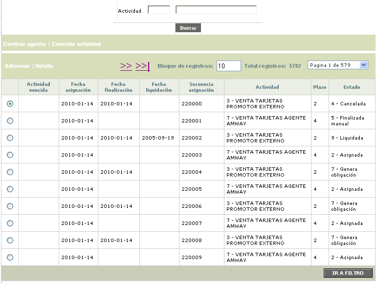
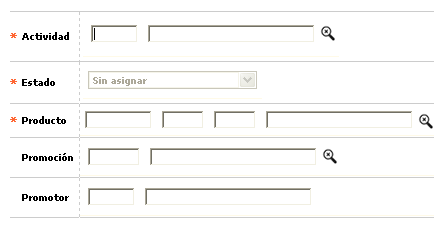
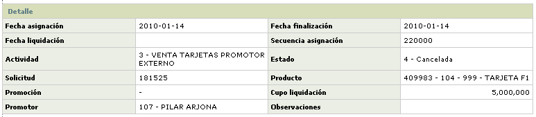

Supervisor de actividades
Mediante esta función se actualiza la asignación de tareas a los promotores que fueron asociados a cada solicitud y para las que no tienen promotor asociado, de manera que el supervisor pueda ingresar y seleccionar el funcionario al cual le serán asignadas.
El formulario cuenta con las opciones de Adicionar, Detalle, Cambiar agente, y Cancelar actividad.

Adicionar: Al activar ese enlace se despliega un formulario:

Actividad |
Campos que muestran el código y la descripción de la actividad que se está asignando. |
Estado |
Indica el estado actual de la tarea, y que puede tomar valores que van desde asignación hasta finalización. |
Producto |
Despliega el bin, segmento y grupo de afinidad, que combinados conforman el producto sobre el cual se está realizando la solicitud, junto con su respectivo nombre. |
Promoción |
Campos que despliegan el código y el nombre del programa de promoción a través del cual se realiza la actividad, acorde con lo parametrizado en la opción Promociones para colocación. |
Promotor |
En este campo se presenta el código y nombre del funcionario promotor asignado para realizar determinada actividad. |
Detalle: Si el usuario invoca la opción Detalle se despliega el siguiente formulario.

Cambiar agente: Permite reasignar una tarea, a un agente diferente al inicialmente asignado.
Cancelar actividad: A través de esta opción el sistema permite cambiar el estado de una actividad a 'Cancelada'.